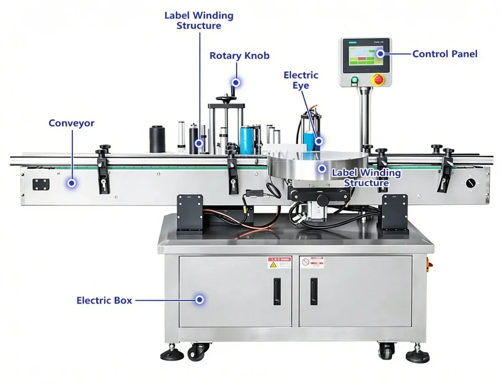
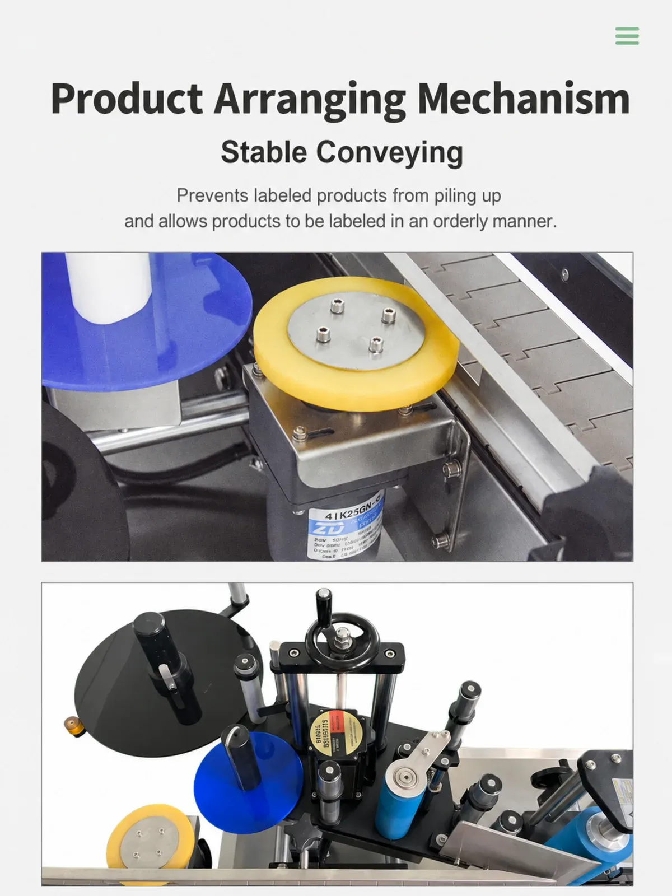
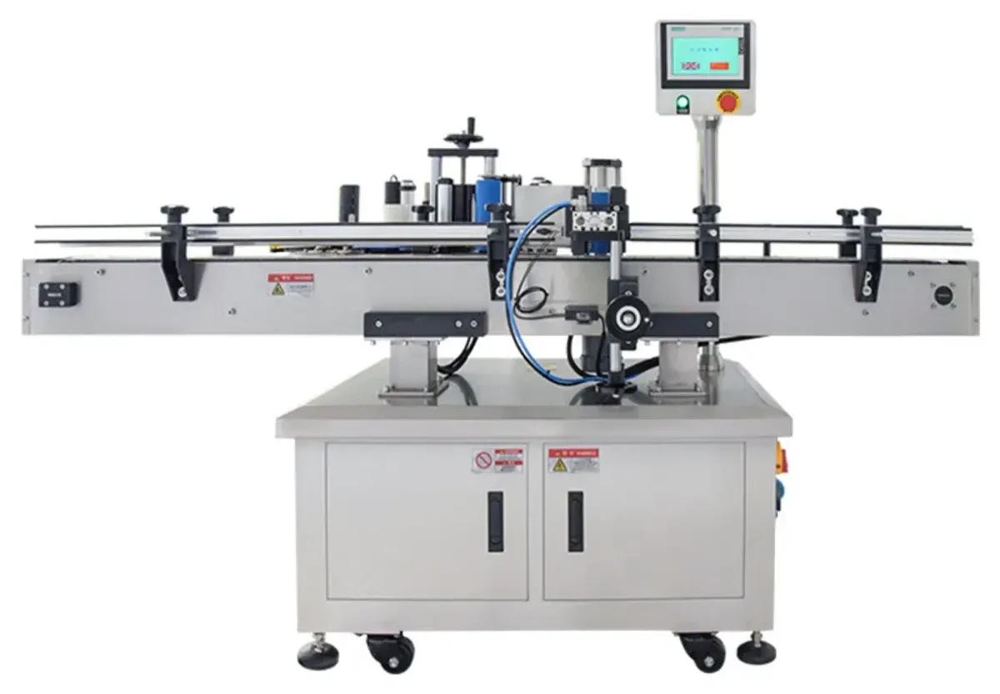
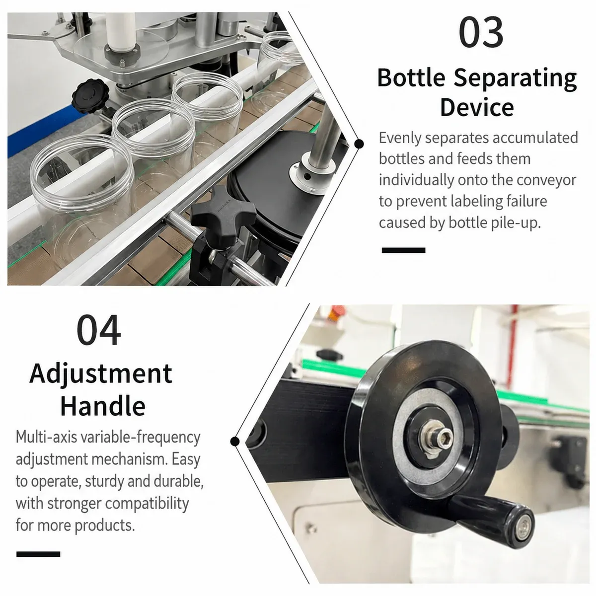
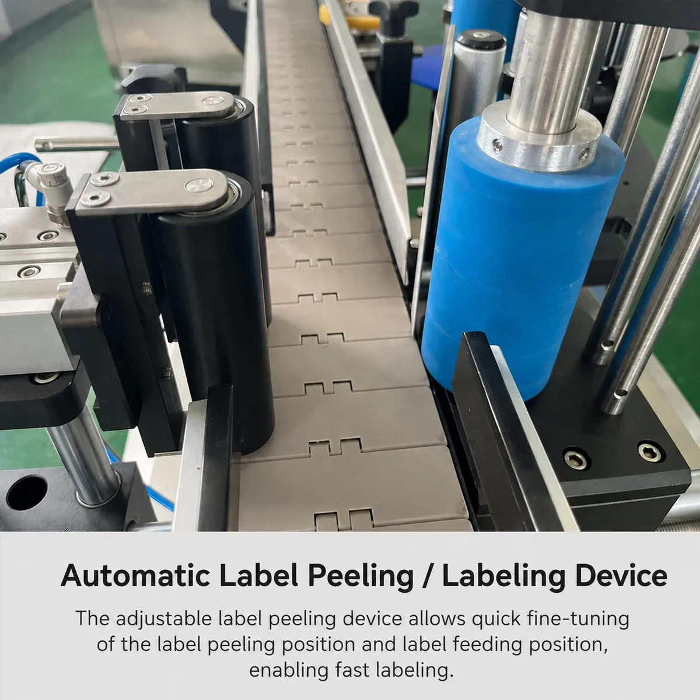
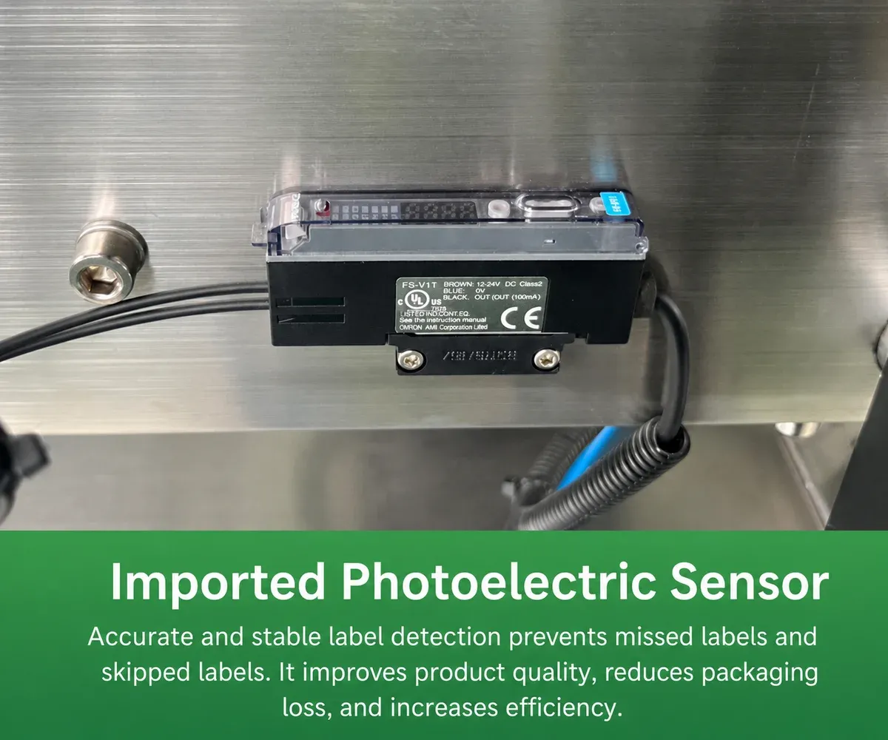
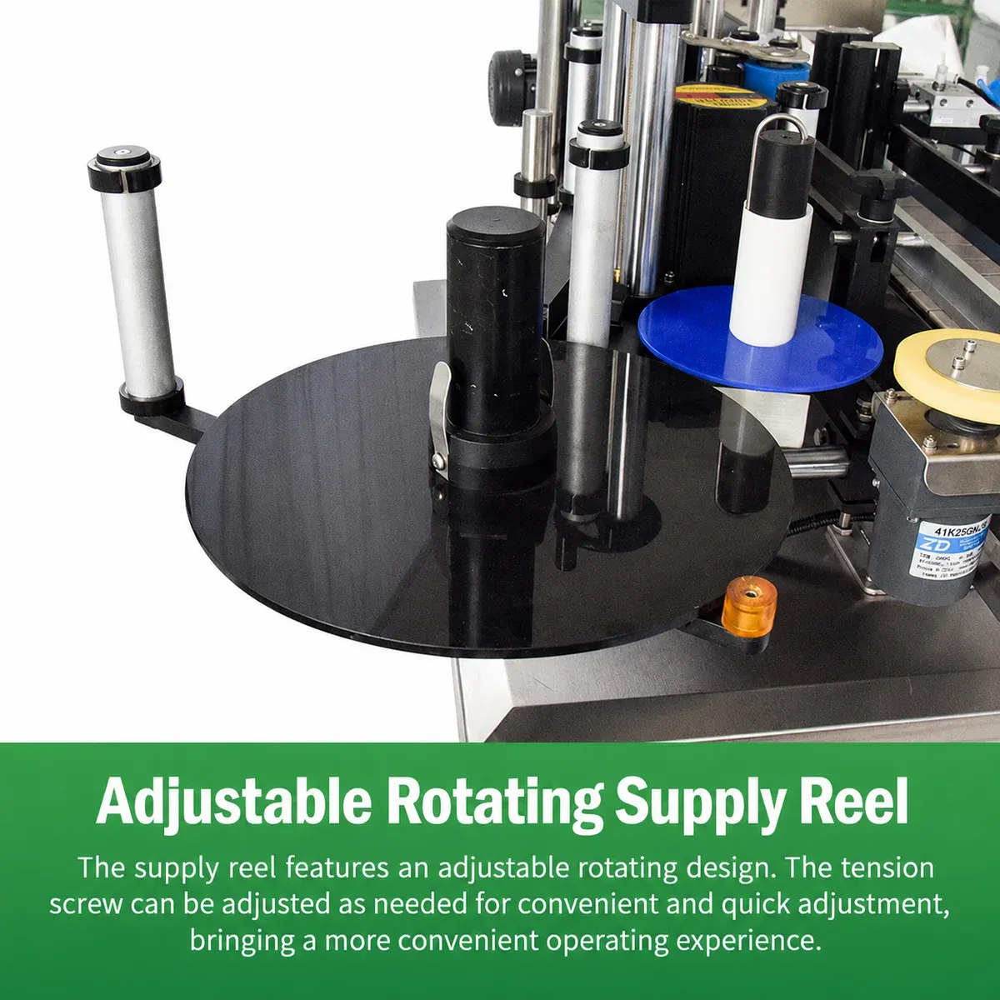

01
Labeling Machines
PLB700 High-Speed Automatic Starwheel Round Bottle Labeling Machine
PLB700 high-speed automatic round bottle labeling machine with starwheel bottle positioning for jars and bottles. 60–100 bottles/min and ±1.0 mm labeling accuracy.
PLB700
Product Introduction
The PLB700 High-Speed Automatic Round Bottle Labeling Machine is designed for fast and consistent labeling of small to medium-sized round containers.
Unlike conventional round bottle labelers that rely mainly on simple bottle stops, the PLB700 uses a starwheel bottle-spacing and positioning system to separate containers and guide them through the labeling station.

This structure helps maintain stable bottle movement at higher production speeds and improves label placement consistency.
The machine is suitable for round bottles and jars used for products such as chili sauce, peanut butter, jam, chocolate spread, cosmetic cream and other food or personal-care products.

Product Name: High-Speed Automatic Round Bottle Labeling Machine; Model: PLB700; Product Category: Labeling Machine; Product Subcategory: Automatic Round Bottle Labeler / Starwheel Labeling Machine; Applicable Container: Round Bottles and Jars;
Label Type: Self-Adhesive Labels; Labeling Method: Automatic Wrap-Around Labeling.

Specifications
Specifications are for reference. Actual machine performance may vary depending on the bottle, label and selected configuration.
Suitable Products & Containers
Suitable products: items 01–10. Suitable containers: items 11–15. Suitability depends on container diameter, height and label size — not the product inside. Confirm the final setup by actual bottle shape and dimensions. Bottle Diameter: Φ30–100 mm; Bottle Height: 30–120 mm.
02
Peanut butter
03
Jam
04
Chocolate spread
05
Cosmetic cream
06
Sauces
07
Food pastes
08
Personal-care products
09
Daily chemical products
10
Other products packed in compatible round bottles or jars
11
Round glass bottles
12
Round plastic bottles
13
Round jars
14
Small cylindrical containers
15
Straight-sided round containers
Application Industries
01
Food Processing
Suitable for round containers of products such as: chili sauce, peanut butter, jam, chocolate spread, sauces, condiments.
02
Cosmetics
Suitable for round jars and bottles containing products such as: cosmetic cream, skin-care products, personal-care products.
03
Daily Chemical Products
The machine can also be used for compatible round bottles in household and daily chemical applications.
Key Features
01
High-Speed Starwheel Bottle Handling
The PLB700 uses a starwheel instead of a conventional bottle stop for container separation and positioning. This structure provides more controlled bottle spacing during high-speed operation and helps improve production capacity.
02
Up to 100 Bottles per Minute
The standard labeling capacity is approximately 60–100 bottles/min. Actual production speed depends on bottle diameter, bottle height, label dimensions, label material, conveyor speed and product stability.
03
±1.0 mm Labeling Accuracy
The standard labeling accuracy is approximately ±1.0 mm. Actual accuracy may vary depending on container consistency, label quality and machine setup.
04
Touchscreen Control
The PLB700 uses a touchscreen control interface to centralize machine settings. Operators can conveniently adjust production parameters and monitor machine operation from the control panel. This reduces the need for multiple separate switches and makes machine adjustment more intuitive.
05
Bottle Detection Sensor
The machine is equipped with a sensor to detect incoming bottles. Once a bottle is detected, the sensor sends a signal to the control system and initiates the labeling sequence. This allows automatic synchronization between bottle movement and label dispensing.
06
Adjustable Label Sensor
The label sensor detects the position of each label on the backing paper. Its sensitivity can be adjusted according to different label materials. This helps improve dispensing accuracy and reduce missed or incorrect label feeding.
07
Heavy-Duty Chain Conveyor
The chain conveyor provides stable container transport and is suitable for continuous production. The standard conveyor width can be customized according to bottle dimensions and line requirements.
08
Wide Label Size Range
The PLB700 supports labels within approximately: Label Length: 20–300 mm; Label Height: 15–130 mm. The label range can also be customized according to the application.
09
Adjustable Label Roll System
The label feeding and rewinding structure is designed for continuous self-adhesive label application. Standard label roll dimensions include: Roll Inner Diameter: Φ76 mm; Maximum Roll Outer Diameter: Φ350 mm.
Containers enter the labeling machine through the conveyor. The starwheel separates incoming bottles and controls the spacing between containers before they reach the labeling station. A bottle detection sensor identifies each passing container and sends a signal to the control system.

The label sensor monitors the position of the self-adhesive label on the backing paper. When the bottle reaches the correct position, the labeling mechanism dispenses the label and applies it around the bottle surface.

How It Works
The machine can also be integrated with upstream and downstream packaging equipment for continuous production.
01
Bottle Feeding
02
Starwheel Spacing
03
Bottle Detection
04
Label Dispensing
05
Wrap-Around Labeling
06
Finished Bottle Output
One of the key differences between the PLB700 and a conventional round bottle labeler is the starwheel bottle-handling mechanism. The starwheel controls the spacing and movement of bottles before labeling.
At higher line speeds, accurate bottle spacing becomes increasingly important. If bottles enter the labeling section too close together or with inconsistent spacing, the label dispensing timing can become unstable. The PLB700 uses a starwheel to separate and position bottles before labeling.

Starwheel Labeling System
Compared with a simple bottle-blocking mechanism, this design is particularly useful for: For customers requiring higher output than a conventional round bottle labeler, the starwheel structure provides a more suitable bottle-handling solution.
01
Higher production speeds
02
More consistent bottle spacing
03
Stable bottle positioning
04
Reduced bottle interference during labeling
05
Improved labeling consistency
06
Better synchronization with the labeling mechanism
07
Stable high-speed operation
The standard production speed is approximately 60–100 bottles/min. The final output is affected by bottle size, bottle stability, label length, label material, conveyor speed and upstream bottle supply. For larger bottles or long labels, the actual labeling speed may be lower.
Standard label dimensions are approximately: Length: 20–300 mm; Height: 15–130 mm. The machine can be customized for different label dimensions when required.

Labeling Capacity & Size Ranges
The standard container range is: Diameter: Φ30–100 mm; Height: 30–120 mm. For containers outside this range, the starwheel and bottle guiding structure should be evaluated before quotation.
Customer Benefits
01
Increase Production Capacity
The starwheel system allows continuous high-speed bottle handling with labeling rates of up to approximately 100 bottles per minute.
02
Improve Label Position Consistency
Controlled bottle spacing and sensor-based label dispensing help maintain more consistent label placement.
03
Reduce Manual Labeling Work
Automatic bottle detection, label dispensing and conveyor transport reduce repetitive manual operation.
04
Support Different Bottle Sizes
The machine can be adjusted for different round bottle diameters and heights within the specified range.
05
Easier Production Adjustment
Touchscreen control allows operators to modify working parameters quickly when changing products.
06
Easy Line Integration
The conveyor-based machine can be connected with filling, capping, coding and other packaging equipment.
Configuration
Standard configuration: items 01–09. Optional / customized configurations: items 10–17. Final configuration should be confirmed before order. Other accessories can be evaluated according to the customer's production line.
01
Main labeling machine
02
Starwheel bottle-separating system
03
Label dispensing mechanism
04
Label roll feeding and rewinding system
05
Chain conveyor
06
Bottle detection sensor
07
Label detection sensor
08
Touchscreen control panel
09
Bottle guiding structure
10
Customized starwheel
11
Customized bottle guides
12
Wider or narrower conveyor
13
Customized label size range
14
Different conveyor height
15
Coding or printing equipment
16
Upstream bottle feeding system
17
Downstream bottle collection system
Connectable Equipment
Upstream equipment: items 01–05. Downstream equipment: items 06–10. The final line configuration should be designed according to the customer's production process. The PLB700 can be integrated into an automatic packaging line.
01
Bottle unscrambler
02
Rotary bottle turntable
03
Filling machine
04
Capping machine
05
Induction sealing machine
06
Date coding machine
07
Inspection system
08
Cartoning machine
09
Case packing equipment
10
Bottle collection turntable
Selection Guide
To recommend the correct PLB700 configuration, please provide: Providing bottle and label samples is recommended when customized starwheels or guides are required.
01
Product / application
02
Bottle material
03
Bottle photo or drawing
04
Bottle diameter
05
Bottle height
06
Label width and height
07
Label roll specification
08
Required labeling speed
09
Required labeling position
10
Existing production line speed
11
Conveyor height, if connecting to an existing line
12
Voltage and frequency
13
Destination country
Frequently Asked Questions
Product Video
PLB700 in Operation
Watch the PLB700 high-speed automatic round bottle labeling machine in operation.
PLB700
Need Help Selecting the Right Round Bottle Labeling Machine?
Tell us about your round bottle labeling requirements. Our team will help you choose the right labeling machine and configuration.